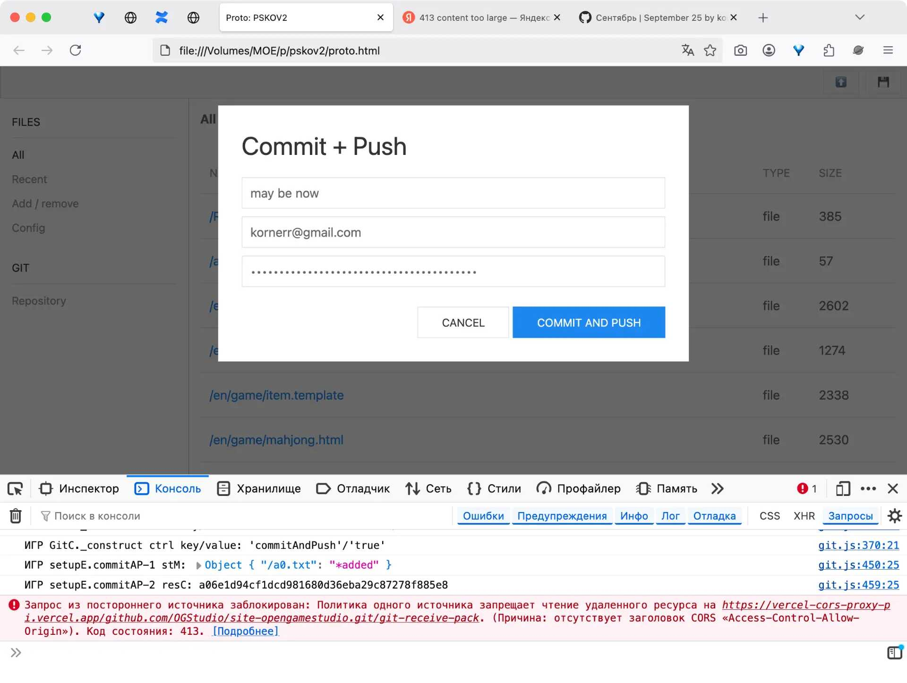

2025-09-03

In August I've added git commit and git push commands to PSKOV.
However, it became clear that Vercel (we use the service to host CORS
proxy) does not allow git push requests for a moderately sized
repository (50M) of this very site. Vercel returns 413 Content
too large error.
Thus, to support git push for moderately sized repositories, I would
need to run my own server with CORS proxy. I have neither money, nor
time to do that at the moment, unfortunately.
That's why, having stumbled upon the wall of reality once again, I have to retreat: PSKOV will now be a Node.js application that generates sites locally. A user can manager Git himself.
In September I will create the first version of PSKOV for Node.js using Kotlin Multiplatform.